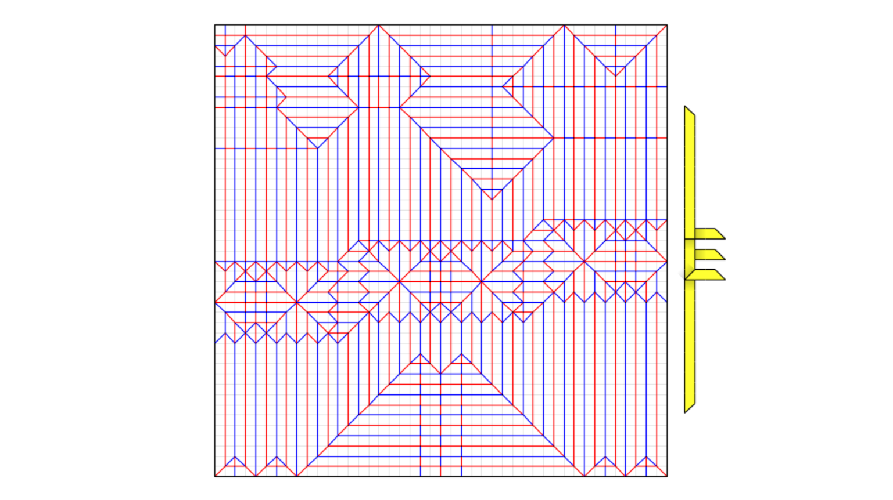
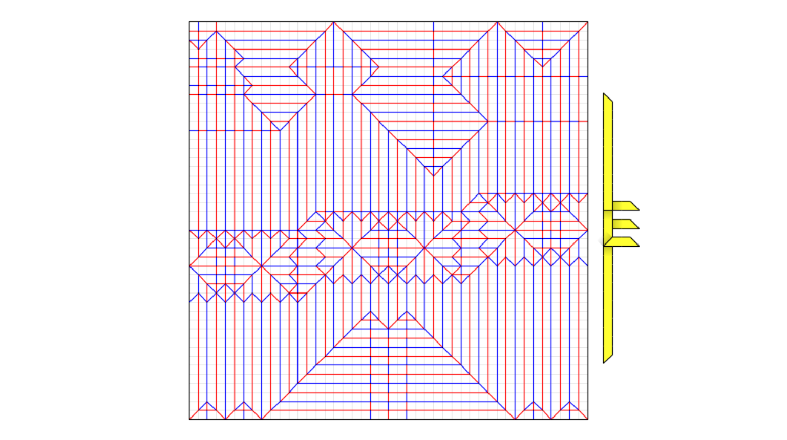

May 2020
My first skeleton design, folded from single tissue.
 

This cp is pretty straightforward, except for the ribs. Although the ribs look like center flaps, I find them easier to fold if you think of them as level shifters, and the rivers between the ribs are just a result of moving the pleats forward. Grid: 44x44
Tags: bp, uniaxial, animal, bird, has_cp, 2020,